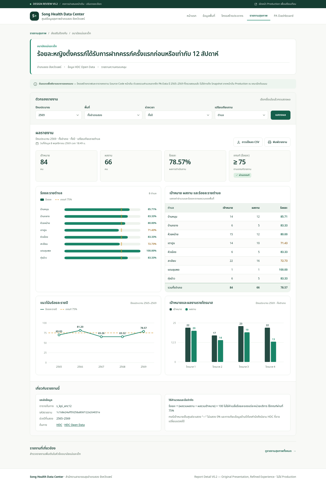
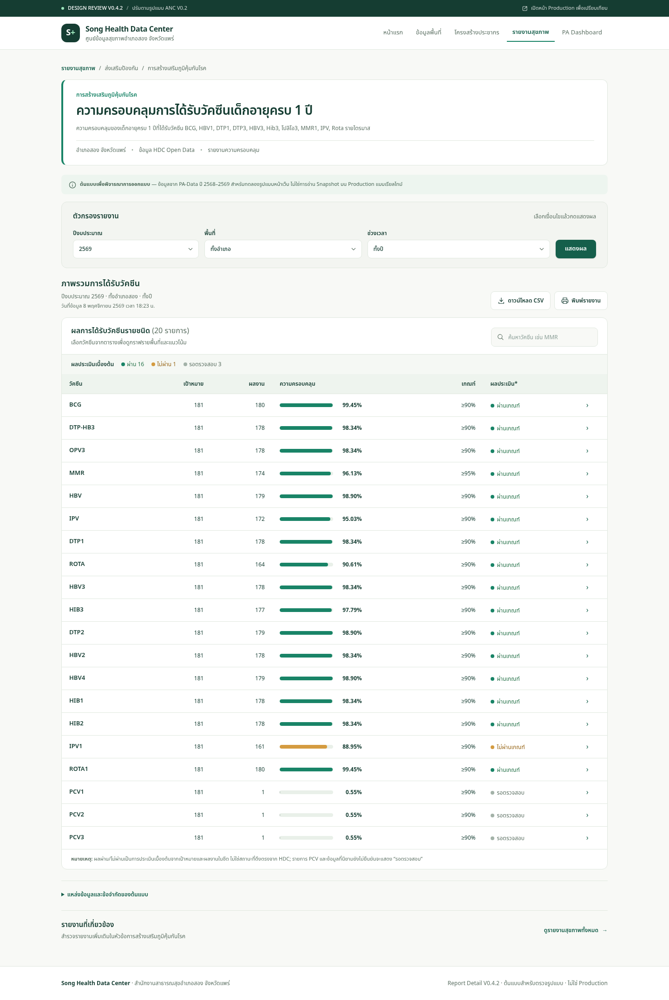
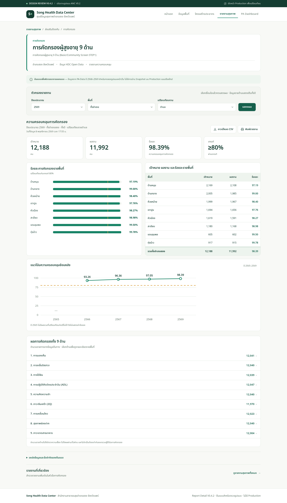

APPROVED BASELINE · ไม่เปลี่ยน
ANC12
คง KPI กราฟพื้นที่คู่ตาราง แนวโน้ม และไตรมาส ตามแนวทาง V0.2 ที่ผ่านแล้ว
เปิดหน้า ANCSONG HEALTH DATA CENTER
ต้นแบบปรับปรุงให้อ่านข้อมูลได้เป็นลำดับ ไม่แสดงกราฟและตารางซ้ำกันโดยไม่จำเป็น

APPROVED BASELINE · ไม่เปลี่ยน
คง KPI กราฟพื้นที่คู่ตาราง แนวโน้ม และไตรมาส ตามแนวทาง V0.2 ที่ผ่านแล้ว
เปิดหน้า ANC
REDESIGN V0.4.2 · รอตรวจรับ
รวมวัคซีน 20 ชนิดในตารางเดียวพร้อมแถบความครอบคลุม เลือกชนิดที่ต้องการจึงแสดงกราฟเจาะลึก
เปิดหน้า EPI1
REDESIGN V0.4.2 · รอตรวจรับ
KPI และพื้นที่ก่อน ตามด้วยแนวโน้ม และตาราง 9 ด้านที่เลือกดูรายพื้นที่เพิ่มเติมได้
เปิดหน้า AGED9EPI1: เลือก MMR หรือ IPV1 จากตาราง ดู KPI และกราฟด้านล่าง แล้วลองค้นหา PCV · AGED9: เลือกด้านสุขภาพช่องปาก หรือความคิดความจำ แล้วเปลี่ยนตำบลและปีงบประมาณ
Design prototype · อ่านข้อมูลรวมจากแหล่งต้นทาง · ยังไม่แก้ Repository หรือ Production